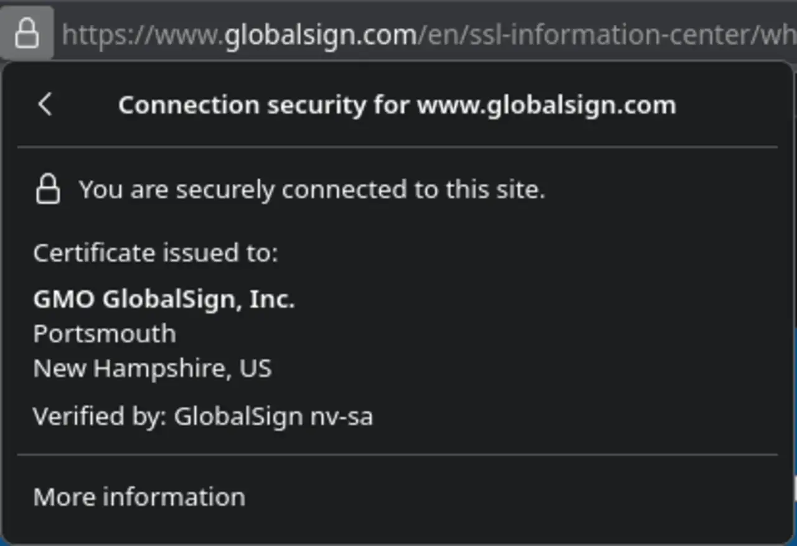

短答
HTTPS 应该是规范 URL 的协议，HTTP 用一跳重定向到它。
图中的面板是浏览器在说某一次连接是安全的，并点名该证书的持有者。那是截图里那个站点的传输事实。它不是排名奖杯，也不是给其他任何人的内容质量证书。SEO 健康关心的是一种协议是规范的，另一种会重定向，并且页面不会用你刚刚离开的协议去拉脚本或图片。
定义
混合内容是仍然请求 HTTP 资源的 HTTPS 页面。浏览器可能阻止该资源。被阻止的样式表或脚本可能去掉人们需要的布局或行为，被阻止的图片可能去掉主视觉。证书上的营销徽章与这项检查无关。去看请求。
抓取怎样遇到这条规则
把 HTTP 一跳重定向到 HTTPS 规范 URL，并从页面去掉 HTTP 资源 URL。
canonical 标签、sitemap 和内链应该已经使用 https。经过 www 主机再改尾斜杠的重定向是三跳。把它们收成一跳。HSTS 可以告诉浏览器记住协议。它修不好你仍在 HTML 里印成 http 的链接。

要检查什么
- 一个 HTTPS 规范主机
- HTTP 页面 URL 一跳重定向
- HTTPS 页面上没有 HTTP 图片、脚本或 PDF
- sitemap 和内链已经是 https
- 检查一条产品 URL 的请求
一个结构示例
sitemap 列出 https URL，但产品模板的 PDF 链接是 http，主视觉图片也是 http。页面是 HTTPS，资源被阻止或被警告。修复是更改资源 URL，并保留从任何 http 页面 URL 出发的一次重定向。审计里不添加徽章。
它不声称什么
HTTPS 不保证排名或引用。
Mika Visibility 把它归到哪里
Mika Visibility 把可抓取性放在 SEO 健康：robots 规则、状态码，以及爬虫能跟着走的路径。断开的路径和被挡住的模板是健康发现。缺主题不是。GEO 仍然依赖爬虫真正能到达的页面，但到得了并不等于替买家写好了答案。
面板是浏览器对一次连接的信号。它不是分数，也不是合作徽章。
常见问题
哪种协议应该是规范的？
HTTPS 应该是规范 URL 的协议，HTTP 用一跳重定向到它。
HTTP 资源 URL 应该怎样处理？
把 HTTP 一跳重定向到 HTTPS 规范 URL，并从页面去掉 HTTP 资源 URL。
HTTPS 能保证排名吗？
HTTPS 不保证排名或引用。
下一步
做一次结构化的 SEO + GEO 审计，查看健康发现、增长缺口和可以执行的蓝图。
更清晰的实体、答案、证据和上下文，会让页面更容易被理解与引用。任何回答产品中的结果都不作保证。